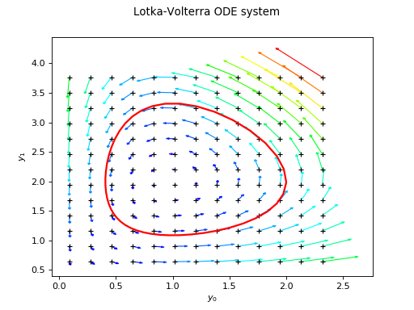

Fehlberg¶
(Source code, png, hires.png, pdf)

-
class
Fehlberg(*args)¶ Adaptive order Fehlberg method.
- Parameters
- transitionFunction
Function The function defining the flow of the ordinary differential equation. Must have one parameter.
- localPrecisionfloat
The expected absolute error on one step.
- orderint,
The order of the method, ie the exponent
 in the estimate of the
local error for a step of size
in the estimate of the
local error for a step of size  written as .
written as .
- transitionFunction
See also
Notes
The Fehlberg method of order is a one-step explicit method made of two embedded Runge Kutta methods of order
and .
More precisely, such a method approximate the solution of:at a given set of locations by first building an approximation over an adapted grid with a number of points
 not necessarily equal to the number of locations
not necessarily equal to the number of locations
 and internal nodes not necessarily part of the set of locations. Then,
the solution
and internal nodes not necessarily part of the set of locations. Then,
the solution  is approximated by a smooth piecewise polynomial
function using
is approximated by a smooth piecewise polynomial
function using PiecewiseHermiteEvaluation, which is evaluated over the set of locations.The method proceeds as follows. Knowing the solution at location and a current time step
 , two
approximations and of
are built, such
that:
, two
approximations and of
are built, such
that:where we assume that:
The evolution operators and are constructed as follows:
with . The most desirable property of these methods is their embedded nature: the high-order approximation reuses all the evaluations of
 needed by the low-order approximation. The
coefficients , ,
needed by the low-order approximation. The
coefficients , ,  and
fully specify the method.
and
fully specify the method.For we have:

0
0
0
1
1/2
1
1
1
1/2
For we have:
0
0
0
1/256
1/512
1
1/2
1/2
255/256
255/256
2
1
1/256
255/256
1/512
For we have:
0
0
0
214/891
533/2106
1
1/4
1/4
1/33
0
2
27/40
-189/800
214/891
650/891
800/1053
3
1
729/800
1/35
650/891
-1/78
For the coefficients can be found eg in the C++ source code. For additional theory on these methods see [stoer1993], chapter 7.
Examples
>>> import openturns as ot >>> f = ot.SymbolicFunction(['t', 'y0', 'y1'], ['t - y0', 'y1 + t^2']) >>> phi = ot.ParametricFunction(f, [0], [0.0]) >>> solver = ot.Fehlberg(phi) >>> Y0 = [1.0, -1.0] >>> nt = 100 >>> timeGrid = [(i**2.0) / (nt - 1.0)**2.0 for i in range(nt)] >>> result = solver.solve(Y0, timeGrid)
Methods
getClassName(self)Accessor to the object’s name.
getId(self)Accessor to the object’s id.
getName(self)Accessor to the object’s name.
getShadowedId(self)Accessor to the object’s shadowed id.
getTransitionFunction(self)Transition function accessor.
getVisibility(self)Accessor to the object’s visibility state.
hasName(self)Test if the object is named.
hasVisibleName(self)Test if the object has a distinguishable name.
setName(self, name)Accessor to the object’s name.
setShadowedId(self, id)Accessor to the object’s shadowed id.
setTransitionFunction(self, transitionFunction)Transition function accessor.
setVisibility(self, visible)Accessor to the object’s visibility state.
solve(self, \*args)Solve ODE.
-
__init__(self, *args)¶ Initialize self. See help(type(self)) for accurate signature.
-
getClassName(self)¶ Accessor to the object’s name.
- Returns
- class_namestr
The object class name (object.__class__.__name__).
-
getId(self)¶ Accessor to the object’s id.
- Returns
- idint
Internal unique identifier.
-
getName(self)¶ Accessor to the object’s name.
- Returns
- namestr
The name of the object.
-
getShadowedId(self)¶ Accessor to the object’s shadowed id.
- Returns
- idint
Internal unique identifier.
-
getTransitionFunction(self)¶ Transition function accessor.
- Returns
- transitionFunction
FieldFunction Transition function.
- transitionFunction
-
getVisibility(self)¶ Accessor to the object’s visibility state.
- Returns
- visiblebool
Visibility flag.
-
hasName(self)¶ Test if the object is named.
- Returns
- hasNamebool
True if the name is not empty.
-
hasVisibleName(self)¶ Test if the object has a distinguishable name.
- Returns
- hasVisibleNamebool
True if the name is not empty and not the default one.
-
setName(self, name)¶ Accessor to the object’s name.
- Parameters
- namestr
The name of the object.
-
setShadowedId(self, id)¶ Accessor to the object’s shadowed id.
- Parameters
- idint
Internal unique identifier.
-
setTransitionFunction(self, transitionFunction)¶ Transition function accessor.
- Parameters
- transitionFunction
FieldFunction Transition function.
- transitionFunction
-
setVisibility(self, visible)¶ Accessor to the object’s visibility state.
- Parameters
- visiblebool
Visibility flag.
 at which the solution is computed.
at which the solution is computed.{kind=link}
{kind=link}